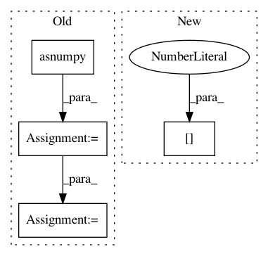

ee602b6f68f0bdd19f449a86955697f8f0a2d54c,gluoncv/data/transforms/video.py,VideoMultiScaleCrop,forward,#VideoMultiScaleCrop#Any#,199
Before Change
return crop_sizes
def forward(self, clips):
clips = clips.asnumpy()
h, w, c = clips.shape
crop_size_pairs = self.fillCropSize(h, w)
size_sel = random.randint(0, len(crop_size_pairs)-1)
crop_height = crop_size_pairs[size_sel][0]
crop_width = crop_size_pairs[size_sel][1]
if self.fix_crop:
offsets = self.fillFixOffset(h, w)
off_sel = random.randint(0, len(offsets)-1)
h_off = offsets[off_sel][0]
w_off = offsets[off_sel][1]
else:
h_off = random.randint(0, h - self.height)
w_off = random.randint(0, w - self.width)
scaled_clips = np.zeros((self.height, self.width, c))
num_imgs = int(c / 3)
for frame_id in range(num_imgs):
cur_img = clips[:, :, frame_id*3:frame_id*3+3]
crop_img = cur_img[h_off:h_off+crop_height, w_off:w_off+crop_width, :]
scaled_clips[:, :, frame_id*3:frame_id*3+3] = \
self.cv2.resize(crop_img, (self.width, self.height))
return nd.array(scaled_clips)
After Change
return crop_sizes
def forward(self, clips):
h, w, _ = clips[0].shape
crop_size_pairs = self.fillCropSize(h, w)
size_sel = random.randint(0, len(crop_size_pairs)-1)
In pattern: SUPERPATTERN
Frequency: 3
Non-data size: 4
Instances
Project Name: dmlc/gluon-cv
Commit Name: ee602b6f68f0bdd19f449a86955697f8f0a2d54c
Time: 2019-09-21
Author: yizhu59@gmail.com
File Name: gluoncv/data/transforms/video.py
Class Name: VideoMultiScaleCrop
Method Name: forward
Project Name: apache/incubator-tvm
Commit Name: 4c13ae9d17d1709ed7a777ce1bb72212e8d2559d
Time: 2020-12-25
Author: masahi129@gmail.com
File Name: tests/python/frontend/pytorch/test_object_detection.py
Class Name:
Method Name: test_detection_models
Project Name: mahyarnajibi/SNIPER
Commit Name: 72caa3677f5f9cc09ed98324c76454c38a7e8098
Time: 2018-06-04
Author: mahyarnajibi@gmail.com
File Name: lib/metric.py
Class Name: MaskLogLossMetric
Method Name: update